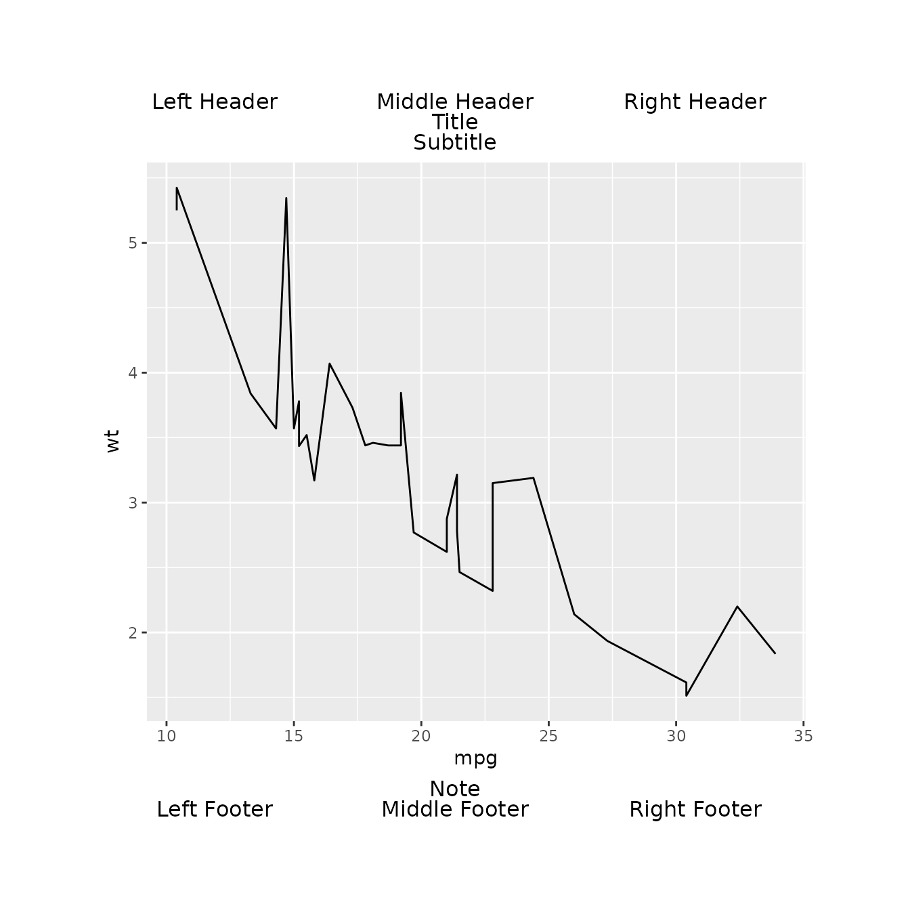

Introduction
It is assumed that you have already read the other vignettes and
understand gridify.
The gridify package simplifies the creation of complex
grid-based layouts
in R. It builds on the base R grid package, providing a
more intuitive interface for constructing advanced graphical
arrangements—such as titles, headers, and footers—without requiring deep
knowledge of grid itself. A good introduction
to grid is available here.
A key strength of gridify is its
meta-programming approach: when you print and assign a
gridify object, you can retrieve and inspect the exact
grid call code. This helps ensure
transparency so you can see precisely how your outputs
are composed. Such a feature is invaluable in regulated industries and
any environment where you need to demonstrate how each output is
generated.
Example Usage
Below is a simple example showcasing how gridify wraps a
ggplot2 figure with headers, footers, and additional text
elements, all while exposing the raw grid code used behind
the scenes:
library(gridify)
# For the native pipe (|>), R 4.1.0 or higher is recommended.
# Otherwise, you can use magrittr's %>%.
library(magrittr)
library(ggplot2)
# Create and print a gridify object
grid_call_behind <- gridify(
object = ggplot2::ggplot(
data = mtcars,
ggplot2::aes(x = mpg, y = wt)
) +
ggplot2::geom_line(),
layout = complex_layout(scales = "fixed")
) %>%
set_cell("header_left", "Left Header") %>%
set_cell("header_middle", "Middle Header") %>%
set_cell("header_right", "Right Header") %>%
set_cell("title", "Title") %>%
set_cell("subtitle", "Subtitle") %>%
set_cell("note", "Note") %>%
set_cell("footer_left", "Left Footer") %>%
set_cell("footer_middle", "Middle Footer") %>%
set_cell("footer_right", "Right Footer") %>%
print()
# The underlying grid call is returned invisibly by the print() method.
# We can inspect or store it for further manipulations:
grid_call_behind
#> grid::gTree(children = grid::gList(grid::rectGrob(x = 0, y = 0,
#> width = 1, height = 1, just = c("left", "bottom"), gp = grid::gpar(fill = "transparent",
#> col = "transparent")), grid::gTree(children = do.call(grid::gList,
#> list(grid::grobTree(grid::editGrob(OBJECT, vp = grid::viewport(height = grid::unit.pmax(grid::unit(1,
#> "npc"), grid::unit(1, "inch")), width = grid::unit.pmax(grid::unit(1,
#> "npc"), grid::unit(1, "inch")))), vp = grid::viewport(layout.pos.row = 4,
#> layout.pos.col = c(1, 3))), grid::grobTree(grid::textGrob(label = "Left Header",
#> x = 0.5, y = 0.5, hjust = 0.5, vjust = 0.5, rot = 0,
#> gp = grid::gpar()), gp = grid::gpar(), vp = grid::viewport(layout.pos.row = 1,
#> layout.pos.col = 1)), grid::grobTree(grid::textGrob(label = "Middle Header",
#> x = 0.5, y = 0.5, hjust = 0.5, vjust = 0.5, rot = 0,
#> gp = grid::gpar()), gp = grid::gpar(), vp = grid::viewport(layout.pos.row = 1,
#> layout.pos.col = 2)), grid::grobTree(grid::textGrob(label = "Right Header",
#> x = 0.5, y = 0.5, hjust = 0.5, vjust = 0.5, rot = 0,
#> gp = grid::gpar()), gp = grid::gpar(), vp = grid::viewport(layout.pos.row = 1,
#> layout.pos.col = 3)), grid::grobTree(grid::textGrob(label = "Title",
#> x = 0.5, y = 0.5, hjust = 0.5, vjust = 0.5, rot = 0,
#> gp = grid::gpar()), gp = grid::gpar(), vp = grid::viewport(layout.pos.row = 2,
#> layout.pos.col = c(1, 3))), grid::grobTree(grid::textGrob(label = "Subtitle",
#> x = 0.5, y = 0.5, hjust = 0.5, vjust = 0.5, rot = 0,
#> gp = grid::gpar()), gp = grid::gpar(), vp = grid::viewport(layout.pos.row = 3,
#> layout.pos.col = c(1, 3))), grid::grobTree(grid::textGrob(label = "Note",
#> x = 0.5, y = 0.5, hjust = 0.5, vjust = 0.5, rot = 0,
#> gp = grid::gpar()), gp = grid::gpar(), vp = grid::viewport(layout.pos.row = 5,
#> layout.pos.col = c(1, 3))), grid::grobTree(grid::textGrob(label = "Left Footer",
#> x = 0.5, y = 0.5, hjust = 0.5, vjust = 0.5, rot = 0,
#> gp = grid::gpar()), gp = grid::gpar(), vp = grid::viewport(layout.pos.row = 6,
#> layout.pos.col = 1)), grid::grobTree(grid::textGrob(label = "Middle Footer",
#> x = 0.5, y = 0.5, hjust = 0.5, vjust = 0.5, rot = 0,
#> gp = grid::gpar()), gp = grid::gpar(), vp = grid::viewport(layout.pos.row = 6,
#> layout.pos.col = 2)), grid::grobTree(grid::textGrob(label = "Right Footer",
#> x = 0.5, y = 0.5, hjust = 0.5, vjust = 0.5, rot = 0,
#> gp = grid::gpar()), gp = grid::gpar(), vp = grid::viewport(layout.pos.row = 6,
#> layout.pos.col = 3)))), vp = grid::viewport(name = "lyt",
#> x = grid::unit(0.1, "npc"), y = grid::unit(0.1, "npc"), just = c("left",
#> "bottom"), width = grid::unit(1, "npc") - grid::unit(0.1,
#> "npc") - grid::unit(0.1, "npc"), height = grid::unit(1,
#> "npc") - grid::unit(0.1, "npc") - grid::unit(0.1, "npc"),
#> gp = grid::gpar(), layout = grid::grid.layout(nrow = 6L,
#> ncol = 3L, heights = grid::unit(c(0.4, 0.4, 0.4, 1, 0.4,
#> 0.4), c("cm", "cm", "cm", "null", "cm", "cm")), widths = grid::unit(c(0.33,
#> 0.33, 0.33), c("npc", "npc", "npc")))))))
#> attr(,"env")
#> <environment: 0x55a2a9e44398>
# Retrieve the main object- either a figure or table
OBJECT <- attr(grid_call_behind, "env")[["OBJECT"]]
# Redraw the graphics by eval of the grid call
grid::grid.draw(eval(grid_call_behind))Both of the graphics are the same.
When you call print() on a gridify object
and assign it to a variable, gridify constructs and returns
the grid call. Through meta-programming,
gridify captures all grid calls required to
produce your graphics.
Key Transparency Benefits
Direct Visibility into the Layout
By exposing the rawgridcode,gridifyensures you can see exactly how your figures are constructed. This clear trail of code is especially helpful for validating complex graphics or meeting regulatory requirements.Educational Insight
If you’re interested in learning howgridworks, you can study the generated code. It’s an excellent, hands-on way to build your knowledge of low-level graphics in R.Audit and Debugging
The ability to retrieve the fullgridcalls makes it straightforward to diagnose layout issues or confirm that all elements are placed correctly.